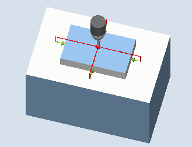
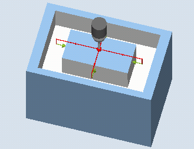

This measuring variant can be used to measure a rectangular spigot on a workpiece. The spigot width and spigot length are measured as well as the spigot center point determined.
The measurements are always performed parallel to the geometry axis of the active plane. Measurements are also possible at a rectangular spigot rotated around the infeed axis. To do this, an angle corresponding to the real spigot position must be entered in the parameterization axis. Probing at the sides of the spigot is always at right angles to these.
A protective zone can be defined around the spigot.
With the "3D probe with spindle reversal" measuring method, measurement is performed in the axes of the plane as differential measurement. Two complete measurements of the rectangular spigot are automatically carried out one after the other, one with a spindle position of 180 degrees, and one with 0 degrees. The special procedure for this measurement permits the use of an uncalibrated multi-directional probe. However, the correct tool radius of the probe must be determined once by calibrating the probe. Probe types 712, 713 and 714 are not suitable for this purpose. A positionable spindle is mandatory.
With the "Align 3D probe" measuring method, the switching direction of the probe is always aligned to the current measuring direction. This function is recommended when high demands are placed on the measuring accuracy. Probe types 712, 713 and 714 are not suitable for this purpose. A positionable spindle is mandatory.
The measurement result (measurement difference) can be used for the following:
Correction of a WO so that the workpiece zero is in relation to the center point of the rectangular spigot
Offset of a tool
Measurement without offset
An extended tool offset in the replacement tools as well as additive and setup offsets are also possible. Empirical values can generally be included in the calculations for tool offsets.
Two opposite points in each of the two geometry axes of the plane are measured. The measurements start in the positive direction of the 1st geometry axis. The spigot width and the spigot length are calculated from the four measured actual positions of the spigot sides, taking into account the calibration values. Corresponding to the work offset selected to be corrected, the position of the spigot center is determined as the workpiece zero. The measuring differences of the side lengths are used as the basic variable for a tool offset. The position of the spigot zero as basis for the work offset.
With the selection Setpoint center point "YES", the position of the rectangular spigot center can be defined as workpiece zero through setpoint specifications.
|  Measure: Rectangular spigot (CYCLE977) |  Measure: Rectangular spigot with protection zone (CYCLE977) |
The probe must be active as tool.
Tool type of the probe:
3D multi probe (type 710)
Mono probe (type 712)
Star-type probe (type 714)
| Note |
The following measuring methods are only possible in the axes of the plane:
The probe types 712, 713 and 714 generally cannot be used for these measuring methods. |
| Note |
A SPOS-capable spindle is needed for the functions "3D probe with spindle reversal", "Align 3D probe", or for probe types 712 and 714. |
The probe must be positioned above the rectangular spigot at the position setpoint of the center point. This position approached above the spigot represents the starting position and at the same time the setpoint for the offsets to be determined.
With the infeed path that has been entered, it must be guaranteed that from the starting position height, the desired measuring height at the rectangular spigot can be reached.
A protection zone has no effect on the starting position.
| Note |
If too large a measurement path DFA has been selected so that the protection zone is violated, then the distance is reduced automatically in the cycle. However, there must be sufficient room for the probe ball. |
The measuring cycle end position of the probe ball is centered above the spigot at the height of the measuring cycles starting position.
| Note |
The range of the cycle starting positions with regard to the spigot center point must be within the value of the measuring path DFA, otherwise, there is danger of collision or the measurement cannot be performed! |
See also:
Measure: Rectangular spigot (CYCLE977)